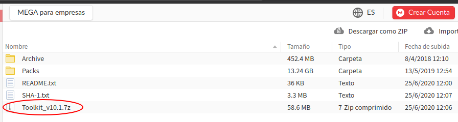
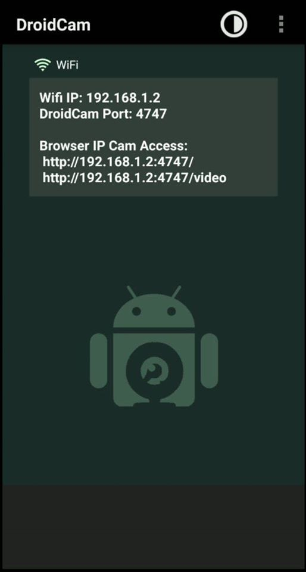
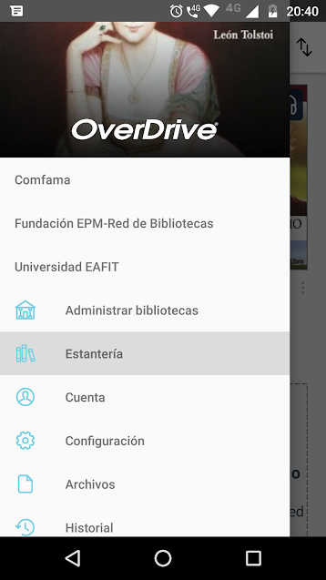

Entradas en Español
Espiral de Parker con Python
- 2024-10-06
En esta entrada veremos la solución numérica a la ecuación diferencial no lineal de primer orden que modela la velocidad del viento solar en función de la distancia heliocéntrica. Una vez se obtiene este perfil de velocidad, el cual es dependiente de la temperatura se procede a transformar a coordenadas lagrangianas centradas en un punto de emisión sobre la corona. De esta forma será más natural construir un brazo de la espiral de Parker, sobre el cual evoluciona el perfil de velocidad hallado.

Agregar Google Ads en Sphinx
- 2024-09-25
Siguiendo con ajustes en mi blog, algo que quería darle una nueva oportunidad, así algunos lo odien, es a Google Ads y ver esto como permite generar algún ingreso ahora que muchos usamos bloqueadores (sí, yo también). Les cuento como configurarlo a través de la modificación de las plantillas por defecto.

Agregar logo y favicon en Sphinx
- 2024-09-24
Un nuevo paso en mi blog, es que decidí dejar una huella de personalización a través de un logo, algo sencillo, pero propio, distinto a una imagen descargada como lo era antes y que por lo mismo no lo había configurado. Les cuento como configurar el logo y el favicon en Sphinx.
UV, alternativa rápida a PIP y VENV
- 2024-06-30
UV es un gestor de paquetes y entornos virtuales alternativo para Python,
desarrollado en Rust y que nos promete ser muy rápido en los procesos que
pretende reemplazar de PIP y VENV. En este sentido, solo es añadir uv antes
de las instrucciones habituales y debe funcionar (salvo algunos casos particulares
de compatibilidad o de no existir implementación).
Instalar Rust en Linux
- 2024-06-15
En mi proceso por aprender Rust, iré compartiendo algunos pasos con ustedes. En esta ocasión, como instalar Rust en Linux, y prepararnos para usarlo en VSCode y en Notebook.

Proton: Modo de compatibilidad de Steam
- 2024-06-04
¿Quieres jugar ese videojuego Steam que es soportado en Windows, pero no en Linux? Te cuento como usar el modo de compatibilidad de Steam en todos los juegos.
Recursos de acceso abierto para tu investigación
- 2024-06-02
Ante la barrera de acceso de información especializada, típicamente por requerir de pago, existe una variedad de alternativas de acceso abierto.
Factura electrónica: ¿Qué hacer si te la niegan?
- 2024-05-26
La factura electrónica es un documento electrónica fiscal, de uso obligatorio en Colombia para la facturación oficial ante la DIAN. Pero los establecimientos todavía tienen negaciones o bloqueos para este proceso. Y es un deber ciudadano reportar estas anomalías.
Migrando mi blog de Nikola a Sphinx
- 2024-05-24
Migrar de un generador estático a otro no es un proceso del todo transparente, así que aquí te explico algunos por menores para hacer una migración de Nikola a Sphinx.
Configurar segundo teclado en Linux
- 2024-05-19
Si tienes un segundo teclado para conectar a tu equipo Linux, pero su distribución de lenguaje es diferente, te explico como configurar aquí.
Crear un blog con Sphinx
- 2024-05-16
Por fin he dado el paso de retomar el blog, y con ello un proceso de migración que deseaba, generar el blog con Sphinx. Sobre este proceso les estaré contando en varias entradas, ya que la migración no la he concluido, y esta es la primera entrada al respecto, con lo más básico para iniciar y no fracasar en el intento.
Configurar RetroArch en Steam
- 2021-12-14
RetroArch es un agregador de emuladores y videojuegos para estos, multiplataforma (descargas de plataformas soportadas) y de código abierto. Es posible instalar RetroArch de forma directa en el sistema operativo o a través de Steam, teniendo este algunas ventajas adicionales de unir las caracterśticas de Steam Play y el almacenamiento de estado en Steam Cloud. Adicional a esto, sin duda es una ventaja para el desarrollo de la comunidad alrededor de este medio adicional de distribución.
Usar Ubuntu en Windows con WSL2
- 2020-10-05
Como contaba en una que otra publicación, por motivos laborales mantengo mucho en Windows pero es necesario en ocasiones tener Linux a la mano. Sin duda a nivel de desarrollo Linux toma cada vez mayor relevancia y es notorio cuando Microsoft le da relevancia al soporte de Linux en su ecosistema, no solo en despliegues en nube sino también en el mismo escritorio. En esto último, referimos a WSL (Windows Subsystem for Linux) [wsl].
Crear versión de Windows mínima con MSMG Toolkit
- 2020-07-09
Reciente eliminé la partición de Windows de mi máquina por un problema en el qué probé crear la tabla de partición de nuevo, pero me dio pereza instalar en ese momento Windows porque mi sistema operativo principal es Linux. Además, Windows no funcioba fluidamente en la máquina.
Instalar paquetes snap en Linux Mint 20
- 2020-06-29
¿Ya tienes Linux Mint 20 y deseas instalar paquetes Snap? Mint ha decidido deshabilitar la instalación de Snap por defecto y es necesario cambiar la configuración de apt para poderlo hacer.
Instalar Anaconda Python
- 2020-06-29
En los últimos años, una herramienta se ha popularizado no solo como una base para el ecosistena de la analítica de datos («ciencia de datos» como llaman también algunos) sino también en general para el desarrollo en Python (científico, web o de propósito general). Esta herramienta es Anaconda, que no solo nos facilita un sistema de distribución de paquetes multiplataforma, un repositorio principal con amplio soporte multiplataforma (canal default o anaconda) sino un gestor de ambientes para permitir aislar nuestras dependencias facilitando la reproducibilidad y evitando los conflictos.
Ver Netflix juntos pero separados
- 2020-06-21
Ante la necesidad de cuidarnos en esta cuarentena, hemos perdido los momentos de cine o de maratones con familia y amigos, pero hasta en esto hay forma de innovar y buscar opciones para mantener un equivalente de estas actividades sin descuidar nuestra salud, cumpliendo cada protocolo requerido gracias a la tecnología.

Determinar intersecciones en el diagrama de Venn con R
- 2020-06-13
Esta entrada es mi primera entrada asociada al lenguaje R y sobre mi primer paquete en R: venn.compute. Este paquete surge por un caso de uso particular que estaba ayudando a automatizar de determinar los elementos (no solo el dibujo ni la cantidad) de las intersecciones y específicos de un diagrama de Venn, útil en bioinformática para comparación de genes.

Reformas del blog: Parte 1
- 2020-05-26
Bueno, he estado en múltiples ocasiones por escribir sobre mantener un blog, y hoy fue el caso, pero centrado en unas actualizaciones que he hecho para mejorar la experiencia de los lectores que usan su celular y deben soportar altos tiempos de carga y una alta descarga en imágenes cuando las contiene.
Usar la cámara de tu celular como webcam
- 2020-05-17
Con la nueva normalidad que vivimos alrededor de la virtualidad, el uso de videollamadas se ha incrementado y muchas cámaras incorporadas en los equipos no poseen buenas características (o son ausentes). Adicional, el soporte de opciones como usar el celular, una buena alternativa para no comprar una cámara web, es amplio en Windows pero no en Linux.
Calcular distancia geodésica con Python
- 2020-05-10
Aunque una de las cosas que más ha rondado en mi desarrollo académico y laboral es la programación, y buena parte de los años en ello con Python, nunca había realizado una entrada al respecto en el blog (lo más cercano ha sido una entrada sobre Crear documentación de un proyecto Python con Sphinx y Crear contenedor Docker aplicación GUI - EALite).
IoT ¿Merece la pena asumir los riesgos?
- 2020-04-09
Sigo con algunas publicaciones asociadas a participaciones en foro y ensayos que he realizado para el curso de transformación digital que estoy realizando por estas semanas. Esta vez, el tema es sobre si amerita asumir los riesgos asociados a la implementación de tecnologías IoT (Internet de las Cosas).
Filtraciones de datos en el siglo XXI
- 2020-04-09
Otra publicación sobre el curso de transformación digital. Esta vez, sobre la precauciones respecto a las filtraciones de datos. Son participaciones en foros del curso.
Aplicación de IoT a la cadena de suministro
- 2020-04-09
Otra publicación sobre el curso de transformación digital. Esta vez, sobre la aplicación de IoT (Internet de las Cosas) a la cadena de suministro. Son participaciones en foros del curso.
Datos y responsabilidad: Covid19
- 2020-04-05
Había tratado de estar al margen de hacer muy público lo que pienso y analizo de los datos de la pandemia por covid19 en Colombia, y de las medidas tomadas. Sin embargo, finalmente me motivé a hacer una segunda afirmación del todo pública (si, ya les contaré que fue lo anterior) porque veo algo recurrente en colegas «científicos de datos» (data scientists que se gustan decir en inglés), donde creen prudente hacer ajustes de curvas básicas y hacer interpretaciones del futuro y observaciones sin contexto del fenómeno.

Seguridad vs flexibilidad del cómputo en nube
- 2020-03-14
Bueno, con el fin de compartir un poco y sacar provecho de la formación en la cual me encuentro, esta es la tercera entrega basada en el curso de transformación digital que estoy realizando. En esta ocasión, la participación requerida en el foro es sobre la seguridad respecto a la flexibilidad de las soluciones de cómputo en la nube.
¿Estamos preparados para un nuevo tipo de monedas, completamente digitales?
- 2020-03-01
Recién he comenzado un curso sobre transformación digital, patrocinado por la empresa en la cual trabajo (SIER, Sistemas Inteligentes en Red). El tema por estos días es la tecnología blockchain y de este tuve que presentar un ensayo sobre la aceptación de monedas digitales basadas en blockchain. Los dejó con mi participación.
Sectores que se ven afectados por blockchain: sector inmobiliario
- 2020-03-01
Como les conté en la publicación anterior, estoy en un curso de transformación digital. Pues bueno, la idea es que compartiré algunas de mis participaciones en el curso y así mantener activo el blog en este tiempo. El blockchain es un tema central en el inicio del curso, y esta vez les comentaré algo breve sobre un sector de aplicación: sector inmobiliario.
Crear documentación de un proyecto Python con Sphinx
- 2020-01-06
Sin duda, una etapa importante en cualquier proyecto de desarrollo (y no solo de software) es la generación de la documentación. En el caso de software es posible asistirse de herramientas que ayudan a automatizar la generación de la documentación mediante extracción de comentarios en el código, usar palabras claves y lenguaje de marcado para modificación de estilo en el texto o inclusión de otros elementos que no sean solo texto plano (imágenes, ecuaciones, enlaces entre otros).
Usar Anaconda Python en Git Bash
- 2019-12-31
Recientemente, por motivos laborales he tenido que trabajar en Windows y es por esto que tuve la necesidad de buscar una opción cómoda de usar Git en Windows, con soporte de Bash a lo que estoy acostumbrado en Linux y con Python Anaconda reconocido. De alguna manera, la versión mínima de como usar Windows sin morir en el intento.
Crear contenedor Docker aplicación GUI - EALite
- 2019-11-22
Dando continuidad al uso de contenedores que inicie en la publicación anterior, Crear contenedor LXC para aplicación GUI - EALite, reproduciré la instalación de Enterprise Architect Viewer (EALite) con Docker (y por supuesto, Wine). Si deseas reproducir el ejemplo de este caso, requieres reproducir la el artículo mencionado para extraer el directorio de Wine.
Crear contenedor LXC para aplicación GUI - EALite
- 2019-11-11
El uso de contenedores en la industria del software se ha extendido ampliamente y no es de extrañar, ofrece a los desarrolladores la posibilidad de mejorar el aislamiento de sus servicios y de ahí hacerlo menos susceptible a errores por colisiones con otros servicios o conflictos de dependencias. Al mismo tiempo, son una alternativa más amigable en recursos respecto a las máquinas virtuales.

¿Nos atraemos gravitacionalmente?
- 2019-11-08
La interacción gravitacional o mal llamada fuerza gravitacional (hablamos de dos cosas diferentes), suele verse en nuestro imaginario como una interacción dominante, finalmente, controla el movimiento de los grandes astros y nos ata a la Tierra. Pero, esta interacción no es exclusiva de los astros, existe entre todos los cuerpos con masa, y si es así, ¿por qué no somos atraídos gravitacionalmente por otras personas?
Instalando paquetes en Linux (Mint)
- 2019-10-22
En Linux ahora tenemos muchas más opciones para instalar nuestros programas favoritos y de uso diario, según los intereses personales en reducir espacio en disco, aumentar estabilidad, mejorar seguridad, disponer siempre de la última versión, tener muy buena integración con el sistema operativo o no requerir permisos de administrador. Algunas de las estrategias, incluso facilitan que el mismo mecanismo podemos usarlo en más de una distribución Linux y así disponer de una transición más simple.
Recuperar el arranque de tu Moto G5 en Linux
- 2019-10-21
Recientemente, aunque cambié a un Moto G7, pensaba restaurar el celular de fábrica pero salió mal el proceso (no siempre es fácil si pretendes eliminar el acceso a administrador -root- y el recovery personalizado -TWRP-).
Audiolibros con Overdrive y Biblioteca EPM
- 2019-05-17
Vuelvo después de un largo tiempo al blog, con el fin de compartirles una excelente recomendación para aprovechar sus tiempos de espera en transporte o en las eternas filas. Se trata de aprovechar el tiempo escuchando audiolibros.
Cumple 28: perfecto, triangular y hexagonal
- 2018-04-01
Bueno, después de algún tiempo vuelvo con entradas que por fin se relacionan con algo que no sea tecnología. La motivación de esta publicación es el particular mensaje de cumpleaños que me dejo mi hermano, y que dice así:
La experiencia de PyCon Colombia 2018
- 2018-02-18
Tras mi primera participación en PyCon Colombia (segunda versión del evento), me encuentro con una comunidad bastante amplia y que hace honor a una de las características más importantes del lenguaje, y es lo extensa y variada que es su comunidad. Colombia no es la excepción a esto.

Ejecutando macOS en Linux
- 2018-01-18
Debo admitirlo, no me gusta Mac y sigue sin gustarme, pero en múltiples ocasiones se hace necesario poder disponer de un Mac al igual que de un Windows para efectos de pruebas o de correr software específico cuando no hay de otra. Por este caso me di a la tarea de buscar como lograr ejecutar macOS en mi equipo Asus que posee Linux instalado de la forma más fácil posible. A continuación, como ejecutar macOS (específicamente hackintosh) en tu equipo Linux (el procedimiento aplica también para Windows).

Problemas de audio en Moto G5
- 2018-01-04
Recién cambié mi celular Moto G3 por un Moto G5 y vaya susto el que me llevé inicialmente. La verdad, como el cambio fue más bien un asunto de afán no revisé foros previamente (ver recomendaciones a la hora de comprar) sobre los problemas y me confié de los conocidos que tienen este celular y que nunca les he escuchado de problemas.
Comprando celular para personalizar
- 2018-01-03
Después de algún tiempo de no publicar aquí, vuelvo con la intención de tener regularidad en el blog. Para empezar este año y dado a mi cambio de celular, estuve pensando sobre cuales debían ser las características a revisar antes de comprar un celular. Bueno, aquí el detalle es que cuando yo tengo un celular me gusta personalizarlo pero personalizar no es simplemente una tapa o instalarle una aplicación sino cambiar la versión de Android por versiones modificadas y tener privilegios de administrador.
¿Desestimulan 20 pesos el uso de bolsas plásticas?
- 2017-07-12
El impuesto verde sobre las bolsas plásticas empezó a aplicar desde el 1 de julio de 2017 en Colombia. Según dice el gobierno, la medida del impuesto es desestimular el uso de las bolsas plásticas en Colombia y no una recolección de dinero o enriquecimiento de alguna entidad.

Topónimos colombianos en RLA-ES
- 2017-07-11
Primero, saludo después de un tiempo largo de ausencia. Por diversos motivos el blog tuve que dejarlo en el olvido pero hoy lo reanudo. El como volví merece una publicación posterior.
Con calma para SteamOS
- 2014-04-20
Bueno, es un poco raro que sin escribir hace mucho, lo primero que escriba sea del mundo linux que del mundo de la ciencia y particularmente de la física que es mi especialidad. Pero resulta que a veces es un poco más fácil escribir sobre cosas que no toque justificar tanto.
El debate Cuero - Bernal
- 2013-11-11
Si bien la ciencia en esencia es imparcial, la objetividad de ella tiende a perderse cuando desconocemos mucho del medio o cuando solo por nuestra condición humana dejamos que la ciencia deje su ideal. Y en ello, se crean discusiones de carácter casi absurdo por falta de definiciones adecuadas y de una cultura general en ciencia y tecnología, y su impacto no solo en la comunidad general sino incluso, hasta en los mismos académicos. Recientemente, y aún en continua discusión en los medios, el caso del científico colombiano Dr. Raúl Cuero, nos enseño la falta de cultura y de criterio de nuestro periodismo científico y de la falta de ética en la investigación científica de algunos casos, sin desmeritar en ningún momento sus competencias en ciencia. Todo sale a la luz en un artículo del Dr. Rodrigo Bernal que salió en El Espectador, Los dudosos honores del científico colombiano Raúl Cuero, a lo cual siguieron distintos debates y posiciones de respaldo tanto a Bernal (ejemplo en El Espectador que hace una recopilación, y carta de defensa de Carolina Murcia indicando los logros del Dr. Bernal) como a Cuero (ejemplo en La Silla Vacía, el cual me duele por pretende un fuerte apoyo de criterios objetivos, pero sin saberlos usar, y su autodefensa).
¿Tetracuark?
- 2013-06-18
Bueno, resulta que el mundo de la física de partículas viene en un continuo agitar, y nuevos datos y modelos surgen a partir de los experimentos realizados en los grandes aceleradores de partículas (esos túneles enormes en los cuales se hace que partículas a muy alta velocidad colisionen).
Orden y origen del cosmos griego
- 2013-06-18
Segundo artículo basado en mi charla de «Cosmogonía y cosmología griega» de astronomía en el Parque de los Deseos del 14 de mayo de 2013 (el primero fue Cosmogonía griega).
El planeta de Einstein
- 2013-06-02
El planeta de Einstein como ha sido llamado el exoplaneta Kepler-76b es la muestra de la reutilización de los datos del proyecto Kepler para la búsqueda de nuevos exoplanetas.

Cosmogonía griega
- 2013-05-26
La cosmogonía y cosmología de los antiguos griegos se encuentra profundamente vinculada. Sus elementos cosmológicos si bien prescinden de la mitología desde los razonamientos del primer filósofo griego, Tales de Mileto, se puede rastrear el origen de algunos de estos en ella. Los relatos de la cosmogonía griega pueden ubicarse en los textos de Homero y la Teogonía de Hesíodo, en los que se ilustra la estructura de su universo y sus dioses.

Asimov en la ciencia
- 2013-01-18
Isaac Asimov si bien por el común de la gente es conocido solo como un escritor de ciencia ficción y misterio (esta ultima temática menos conocida por el común) y como un gran divulgador de la ciencia, también fue un científico.
El doble cumpleaños de Newton y el calendario gregoriano
- 2013-01-04
Hoy es una nota de tipo curiosa, ya que algunos recordaran que hace 10 días muchos conmemoramos el cumpleaños de Sir Isaac Newton, quien había nacido el 25 de diciembre de 1642. Sin embargo, hoy 4 de enero encontramos como en distintos perfiles sociales, publicaciones y blogs vuelven a conmemorar la fecha que recibió a uno de los revolucionarios de la física de su tiempo y a quien debemos gran parte de lo que nos enseñan en las clases de física de colegio y de primeros semestres de universidad.
Pos-higgsteria
- 2012-11-28
A pesar del tiempo transcurrido desde el anuncio oficial del CERN, el 4 de Julio de 2012, sobre el descubrimiento de un nuevo bosón masivo que sería candidato al tan elusivo bosón de Higgs, el tema sigue dando de que hablar.
Cantante virtual sensación
- 2012-09-25
Como toda una historia futurista y ciencia ficción, como la de William Gibson es su obra Idoru que en japones significa «ídolo», una cantante totalmente virtual se encuentra en el top de ventas de las listas japonesas, y ademas da increíbles conciertos a sus seguidores.

Marte nos trasnocha
- 2012-08-06
Con este lema (#MarteNosTrasnocha popularizado como hashtag en las redes twitter y google+), el Planetario Jesus Emilio Ramirez de la ciudad de Medellín nos convoca a participar hoy de uno de los eventos más esperados por la comunidad astronómica mundial. Aficionados y profesionales de la astronomía se reunirán hoy desde las 8pm en el planetario a ver la transmisión en directo de NASA JPL (si deseas ver la transmisión, puedes dar click en el link) de la llegada del Mars Curiosity a marte.
Nostalgia
- 2012-06-22
Es el inevitable y fijo paso del tiempo, una maquinaria de evolución, recuerdos y olvidos.
La evolución en los griegos
- 2012-05-13
Hablando un poco de la evolución biológica el día de ayer, dando inicio a las actividades del ciclo de astrobiología en el Club Orión, se genero la inquietud sobre el origen griego de la evolución, motivo por el cual me di a la tarea de buscar un poco y realizar esta breve reseña.
Viendo carga molecular
- 2012-02-28
Científicos de IBM fueron capaz de medir por primera vez la distribución de carga de una molécula individual. Este logro permitirá dar nuevas luces acerca de la formación de enlaces entre átomos y moléculas, así como el estudio de distribución electrónicas con estructuras moleculares funcionales.

El último tránsito de Venus
- 2012-02-26
Retomando el blog después de cierto tiempo de abandono por diversos motivos, volvemos con las cosas que nos gustan, ciencia, tecnología y otras curiosidades geeks.

Posibilidad de Agua Salada en Marte
- 2011-09-18
Después de un largo periodo de ausencia en el blog, vuelvo por estos lados a seguir publicando sobre los temas de la ciencia que tanto nos apasiona aprovechando la imagen que expuse en la sesiones del Club Orión del Parque Explora.

Resignación
- 2011-07-28
No sé qué sucede, con el tiempo algo extraño ocurre y no encuentro exactamente qué es.
Olvidarla
- 2011-07-28
De las titánicas fuerzas que esculpieron su imagen en la solida roca súbita e inesperadamente, solo espero que también se encarguen de su rápida y fugaz erosión y no quede rastro alguno de su monumento en las tierras del valle de mis sueños, así de esto quede un muro de lamentos que pronto cubrirá un volumen de agua salada.
Tweets extraterrestres
- 2011-07-26
Hace casi 2 semanas estaba mirando tuits en el Twitter oficial de NASA y me pareció curioso ver un tuit de uno de los astronautas que estaba en la última misión del transbordador Atlantis.

Gravitomagnetismo y Gravity Probe B
- 2011-07-07
Una de las teorías de mayor impacto, no solo a nivel científico sino también del «saber popular» ha sido la teoría de la relatividad de Einstein, que por cierto, su nombre el cuál no fue del agrado de su autor que consideraba la existencia de los absolutos, fue asignado por Max Planck.

Energía alternativa para dispositivos móviles
- 2011-07-07
Las fuentes de energía son parte vital de los sistemas que actualmente nos rodean… que si no la hay, bueno, desde las grandes estructuras hechas por hombre hasta las complejas formas de vida se degradarían, dejarían de funcionar y simplemente sucumben.

Cerebro prehistórico
- 2011-07-06
El cerebro, uno de los órganos tal vez de mayor importancia no solo por sus funciones sino por el interés por su compleja estructura, es un órgano de tejido bastante delicado. Sin embargo, hasta nuestros días se conocen algunos casos de cerebros bien preservados desde tiempos remotos.

ResearchGate, la red social de la ciencia
- 2011-05-11
Con el aumento del uso de la internet en nuestra vida diaria, constantemente hemos migrado todo tipo de actividades pertenecientes a esta al mundo virtual, conviertiéndonos de alguna manera en una nueva raza humana… un humano 2.0 llevando vidas 2.0.

20 años de Linux
- 2011-04-10
Hace 20 años, Linus Torvalds tomo la decisión de compartir su sistema operativo con el mundo. No mucho después, decidió licenciar este bajo General Public Licence (GPL). Este momento histórico cambio todo en el mundo en la historia de la computación.
La Tierra cambio después del terremoto de Japón
- 2011-03-13
Tal vez el título de la publicación dice poco, porque la Tierra siempre esta en un cambio continuo así no lo percibamos. Constantemente la masa de la Tierra aumenta por la deposición sobre ella de toneladas de material cósmico, como por ejemplo, el material de meteoros, meteoritos, aerolitos y otros durante las lluvias de estrellas. Así mismo, las interacciones gravitacionales con la luna y el sol deforman (despreciable) la superficie terrestre y frenan la rotación terrestre. Las placas tectónicas se desplazan, hunden y alzan continuamente. Pero bajo ciertos fenómenos, estos cambios son mas apreciables.
Imágenes de puntos cuánticos
- 2011-02-22
Por mas de una década investigadores han intentado crear pantallas de televisor a partir de puntos cuánticos. Teóricamente los puntos cuánticos podrían ofrecer imágenes de muy alta resolución y altos niveles de eficiencia energética frente a los actuales televisores.

A la búsqueda del bosón de Higgs
- 2011-02-21
Este mes de febrero los investigadores del LHC del CERN han renovado su búsqueda de uno de los misterios mas elusivos del universo, el bosón de Higgs. El bosón de Higgs es una hipotética partícula predicha por el modelo estándar de la física de partículas (la única de dicho modelo sin confirmación experimental) de gran energía y que cumple con la función de dotar de masa a las demás partículas existentes.
El planeta X
- 2011-02-20
Como sabemos, hace unos años considerábamos en nuestro sistema solar 9 planetas e incluso la cuenta llego a aumentar a 10, y dejar como candidatos a otros tantos. Esto motivo a una revisión del concepto planeta por parte de la IAU, que elimino a Plutón y al reciente candidato de la categoría de planetas y quedaron como planetas menores o planetoides.
Calculan masa del agujero negro más grande
- 2011-01-30
El astrónomo Karl Gebhardt de la University of Texas, Austin, presento los resultados de su equipo de investigación el 12 de enero en el encuentro 217 de la Sociedad Americana de Astronomía. Su equipo calculo la masa y horizonte de eventos del agujero negro de la galaxia M87 (NGC4486) (galaxia elíptica de magnitud aparente 8.6 ubicada a 55 millones de años luz en la constelación de virgo).
EteRNA
- 2011-01-15
Ya últimamente nos encontramos con una gran cantidad de actividades, servicios y contenidos en internet. Ya somos parte de la red, así no estemos en su interior como sucede en la película TRON, pero si nos absorbe una parte considerable de nuestro tiempo.
Superconductores borrachos
- 2011-01-11
Como muchos de los descubrimientos de la ciencia, algunos suelen ocurrir por mero accidente, algunos bastante inverosímiles de carácter meramente figurativo y de leyenda urbana para no mas decir que es un golpe de suerte.
2011: Año Internacional de la Química
- 2011-01-10
En 2008, Naciones Unidas declaro que el año 2011 sería reconocido como el Año Internacional de la Química (IYC 2011), conmemorando los logros alcanzados en la química, y sus contribución a la humanidad.
Sueños
- 2011-01-03
Son los sueños una realidad inimaginable, llena de grandes momentos de frenesí y éxtasis. Realidades nacidas de la manifestación de necesidad de estas o de rebeldía ante la realidad clásica que se nos ha condenado a vivir. Señales de advertencia, estados de reminiscencia de momentos de inconsciencia, escape desesperado de la realidad y sus problemas, en una búsqueda aguda de soluciones o viajes inconcebibles en el espacio-tiempo sin barreras físicas.
Revisión a la tabla periódica
- 2010-12-22
Nuestros conocimientos sobre la naturaleza y universo que nos rodean cambian constantemente, y exigen su continua y periódica revisión y actualización, por las diversas necesidades para las áreas académicas, de investigación e industriales.
Santa cuántico
- 2010-12-21
Lo mejor de todo cuando crecemos es no olvidar algo fundamental, que también fuimos niños alguna vez. Tal vez pienso esto ahora porque algunas veces sin darnos de cuenta podemos destruir las ilusiones que los niños tejen alrededor de historias fantásticas, que son el alimento para su capacidad creativa, y nosotros por ser mayores y «saber» como son las cosas derribamos ese mágico mundo con dos palabras «NO EXISTE».
Nuestra nariz más vieja que los pies
- 2010-12-17
La relatividad de Einstein abrió un nuevo capítulo en la física desde sus primeros apuntes en un tratado de la electrodinámica de la luz. Desde la relatividad especial plantea ya un punto que separa rotundamente la nueva física a la física tradicional de Newton, y es la concepción no absoluta del espacio y el tiempo.
Recorrido por la célula
- 2010-12-12
Creo que el mundo vivo a cualquier escala puede exhibir una majestuosa belleza, y que esta es inspiración para que el arte cree una copia de la misma y la transmita. Parte de esta belleza de la vida no solo esta en sus formas (reconstruidas por curvas matemáticas, muchas de naturaleza fractal) sino también por su dinámica, compleja y precisa.
Pensando en el grafeno
- 2010-12-10
Aunque este material fue noticia ya hace un rato, vengo a pensar ahora en el porque sera mi tema de trabajo de grado. Este material fue noticia ya que por estudios de este material fue concedido el premio nobel de física a 2 físicos rusos que trabajan en la Universidad de Manchester.
La flecha temporal
- 2010-10-26
La flecha temporal es la designación al flujo irreversible del tiempo, la representación de la asimetría del tiempo. Lo que se hizo, hecho esta y no hay vuelta atrás. Solo podemos realizar acciones que amortigüen los efectos producidos por el acontecimiento mas nunca cambiarlo o evitar haberlo hecho, o al menos por ahora a cuerpos macroscópicos como nosotros nos es imposible hacerlo.